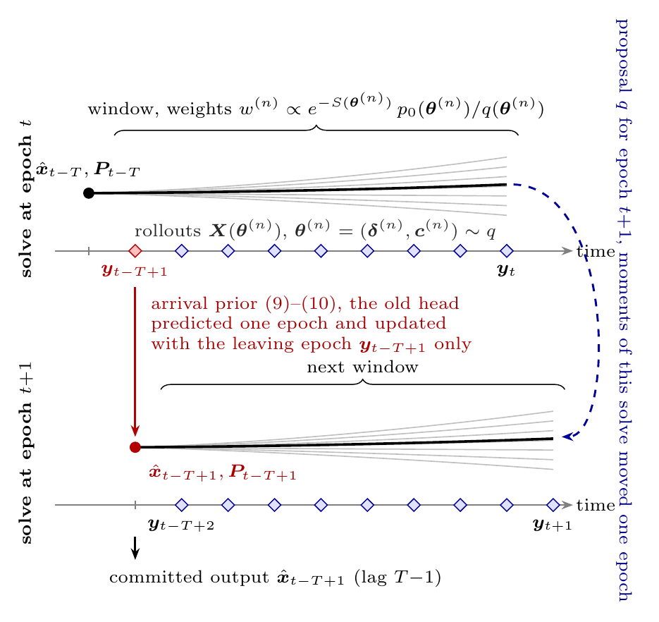
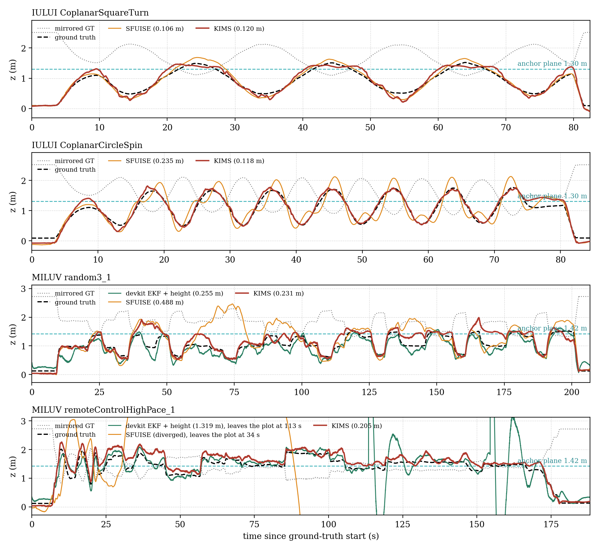
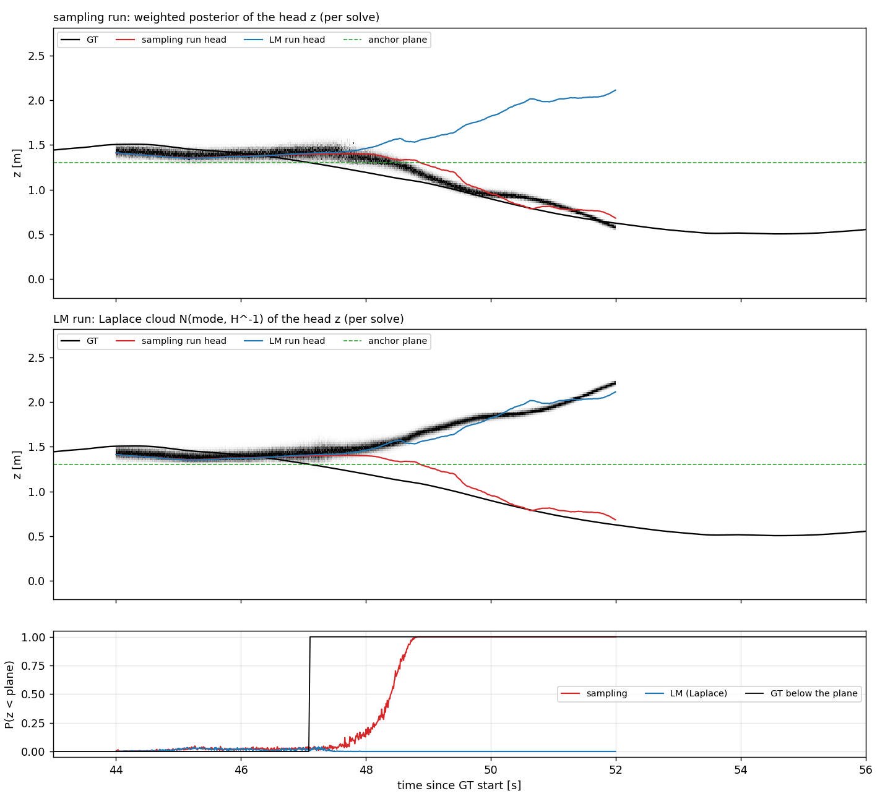
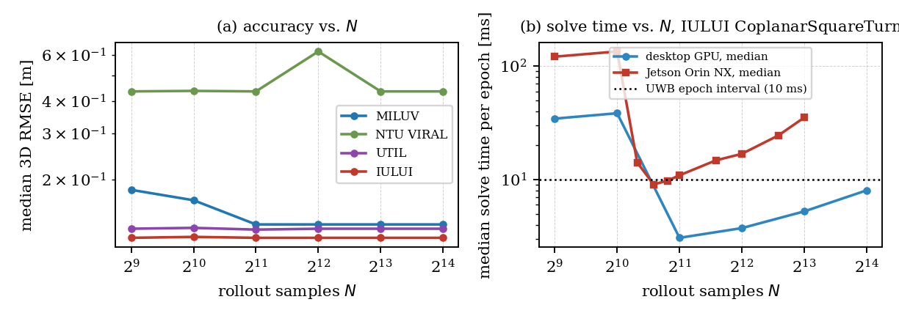
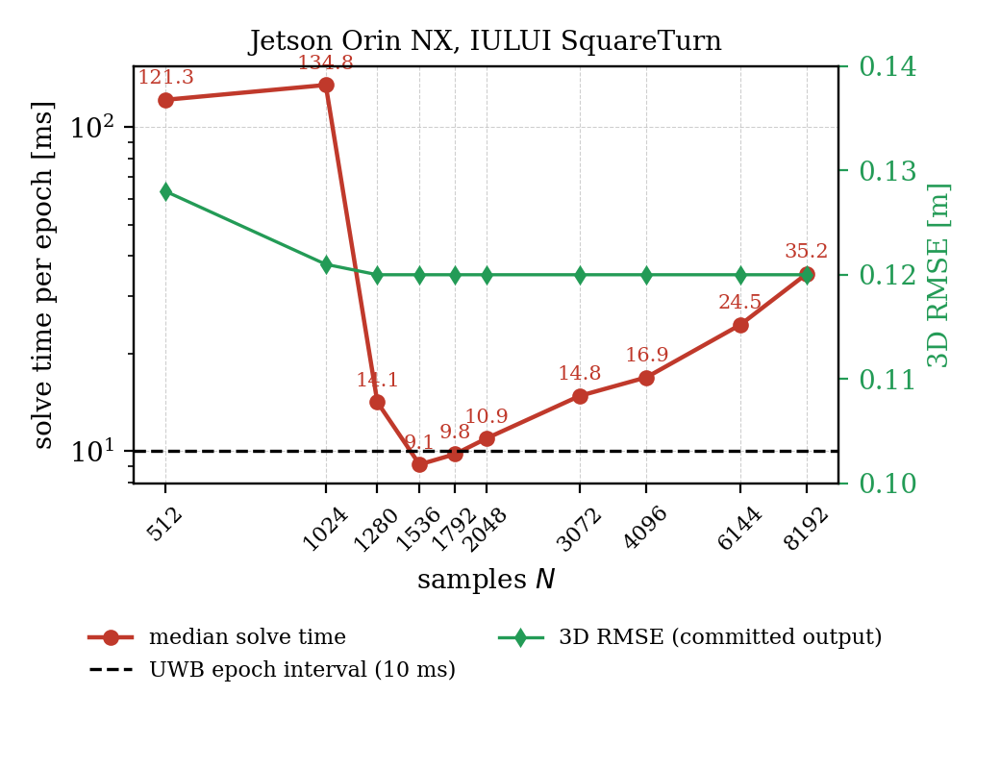

KIMS: Kinematics-Constrained MPPI Smoothing for UWB-IMU 6-DoF Pose Estimation
A fixed-lag smoother that infers one compact window variable, the window-start offset and a smooth
correction of the IMU input, rolls thousands of candidates through the IMU kinematics on a GPU, and carries
the moments of the window posterior, not its mode, to the next window. UWB ranges and an IMU, nothing else.
The sampler on real footage. At every UWB epoch KIMS draws 8,192 window variables and rolls them out
through the IMU kinematics over the 2 s window; 200 of them are projected into the flight-arena camera,
coloured by importance weight relative to the heaviest sample, and the dot is the lag-0 estimate.
Each IULUI flight from 4 s before take-off to touchdown, in real time with the original sound.
CoplanarSquareTurn
NTU VIRAL eee_01 — three coplanar anchors at 1.5 m, Leica ground truth
NTU VIRAL eee_02 — three coplanar anchors at 1.5 m, Leica ground truth
MILUV remoteControlLowPace_0_v2 — six anchors, Vicon ground truth
MILUV random3_0 — six anchors, Vicon ground truth
UTIL const4-trial1-tdoa2-traj1 — single tag, TDOA to eight anchors, Vicon ground truth
IULUI NoncoplanarCircleSpin — our campaign, anchors spread 0.24–2.20 m, Qualisys ground truth
The committed KIMS estimate (red, 2–3 s behind the newest measurement) tracking the ground truth (dashed)
from UWB ranges and IMU only. The teal grid marks the mean anchor height. On NTU VIRAL the three anchors are
exactly coplanar and the flights cross their plane on take-off and landing.
◆ What KIMS does
UWB ranges are drift-free but heavy-tailed, with non-line-of-sight delays and per-link biases that persist
for seconds, and anchors are usually mounted at similar heights, so near the anchor plane the ranges constrain
the height only weakly. For exactly coplanar anchors the window cost has two mirror-symmetric minima, and the
summary of a window that is carried into the next one, the mode and curvature of an optimizer or the single
Gaussian of a filter, decides which branch the estimator follows.
KIMS recasts model predictive path integral control as a fixed-lag smoother. Its virtual
control input is a 33-dimensional window variable: an offset of the window-start state
(position, velocity, attitude) and a four-term cosine correction of the IMU input per channel, independent of
the window length. Every candidate trajectory is generated by propagating the IMU kinematics from the window
head, so it is kinematically consistent by construction. With temperature one the optimal path distribution of
MPPI is the posterior of the window variable given the window's ranges, and KIMS samples it with a proposal
adapted from the previous window, importance weights that correct for that proposal, and adaptive tempering
whenever the weights degenerate. The estimate is the weighted mean of the rollouts, the next proposal is the
weighted moments moved by one epoch, and the arrival prior of the new window head is one Kalman step with the
measurements of the leaving epoch only, so the carried covariance and the window cost never share a
measurement.
One solve: UWB ranges and IMU inputs are accumulated (a), N window variables are drawn from
the proposal (b), each is propagated through the IMU kinematics from the window head (c), and the UWB residuals
with the prior-to-proposal ratio give importance weights whose moments form the estimate and the next proposal (d).

One window shift. The leaving epoch updates the arrival prior of the new head (red); the weighted
moments of this solve, moved by one epoch, become the next proposal (blue).
Kinematics-constrained
Every rollout is an IMU integration with a smooth input correction. The sampled dimension stays at 33 for a
window of 100–230 UWB epochs.
Moments, not modes
The weighted mean and sample covariance keep both branches of a posterior that splits near a coplanar anchor
plane. A matched Levenberg–Marquardt solver of the same objective carries the mode and its curvature and
drops a branch in 30 % of such windows.
Reproducible
Code, the IULUI flights and scripts/reproduce.sh for all 104 sequences of MILUV, NTU VIRAL, UTIL
and IULUI. Offline, no ROS needed.
▤ Results
Median 3D position RMSE [m] over the sequences of each dataset. KIMS, the matched LM solver and
SFUISE (continuous-time spline
smoother, its authors' published configuration) are our runs on identical measurements; the dataset filters are
the values published with the datasets, the MILUV EKF with IMU, UWB and a laser height sensor
(Table 10 of the MILUV paper, ×√3) and the UTIL ESKF (Table 4 of the UTIL paper). Diverged runs
(RMSE above 100 m) rank above every finite value in the medians.
Dataset (sequences)
KIMS
Matched LM
SFUISE
Dataset filter
MILUV (13)
0.135
0.197
0.704 (3 div.)
0.258 (EKF + height)
NTU VIRAL (9)
0.435
0.633
2.537 (2 div.)
—
UTIL (79)
0.187
0.191
0.184 (5 div.)
0.220 (ESKF)
IULUI (3)
0.120
0.418
0.235
—
Per sequence, KIMS is below the dataset filter on 13 of 13 MILUV and 78 of 79 UTIL flights, below SFUISE
on 13/13, 6/9, 33/79 and 2/3, and never above 100 m. On MILUV it is also below the same EKF with VINS-Fusion
visual-inertial odometry added (median 0.228 m, Table 11 of the MILUV paper) on 11 of 12 flights, with neither
camera nor height sensor. Orientation medians: MILUV 6.9° (KIMS), 10.9° (SFUISE), 8.7° (EKF); IULUI
4.0° against 14.3°. The matched LM is never more accurate than KIMS by more than 1 cm and is less
accurate on 14 of the 104 sequences.
Per-sequence x/y/z plots and RMSE of all 104
sequences (PDF, 36 MB).
Divergence, large errors and mirror-branch tracking
A run counts as diverged when its RMSE exceeds 100 m, far above the 3.2 m of the worst non-diverged run. The
practical failure threshold is 1 m. Mirror-branch tracking, an estimate nearer the mirrored than the true
ground truth while the vehicle is more than 0.25 m from the anchor plane, is reported apart because its error
can stay below 1 m: KIMS follows the mirror branch on eee_03 and nya_02 for 34 and
74 % of the scored time (its two runs above 1 m), on nya_01 and nya_03 for
21–23 %, and on three MILUV flights for 2–8 %.
Dataset
Method
Div.
>1 m
Time >1 m [%]
Longest [s]
Max [m]
MILUV (13)
KIMS
0
0
0.00
0.0
0.91
SFUISE
3
1
5.92
25.9
5.55
EKF + height
0
3
2.01
5.6
32.2
NTU VIRAL (9)
KIMS
0
2
21.3
165.6
5.32
SFUISE
2
4
36.7
158.2
9.25
UTIL (79)
KIMS
0
0
0.17
4.1
2.22
SFUISE
5
1
0.43
6.4
8.94
ESKF
0
0
1.89
3.6
2.19
IULUI (3)
KIMS
0
0
0.00
0.0
0.50
SFUISE
0
0
0.00
0.0
0.65
Div.: runs with RMSE above 100 m. >1 m: non-diverged runs with RMSE above 1 m. Time share
(pooled over the non-diverged runs), longest episode and largest error refer to 3D errors above 1 m. Filters are
our runs of the released code.
Per-axis trajectories of KIMS, SFUISE and the dataset filter (our runs) on one sequence per dataset,
MILUV random3_0, NTU VIRAL eee_01, UTIL const4-trial1-tdoa2-traj1 and
IULUI CoplanarCircleSpin; the column titles give the 3D RMSE.
Distribution of the per-sequence 3D RMSE on each dataset (box: quartiles, whiskers: range; diverged
runs counted at the top).

Altitude over the flights with coplanar or nearly coplanar anchors. The dotted grey line is the
ground truth mirrored in the anchor plane (teal). On the IULUI flights the vehicle crosses the plane 6 and 14
times; on MILUV constellation 1 the anchors lie within 1 cm of one height.
Sampling versus the matched LM solver
To separate the inference step from the parameterization, the matched LM solver keeps the window variable,
the prior, the cost, the GPU rollouts, the proposal and the window shift of KIMS and replaces only the weighted
samples: it minimizes the same objective from the proposal mean (at most eight iterations, gradient and Hessian
from central finite differences over 1,123 of the same rollouts) and draws its samples from the Laplace
approximation. Over the 104 sequences it is never more accurate than KIMS by more than 1 cm and worse on 14,
and on the coplanar IULUI flights it stays on the mirror branch for 13 and 10 % of the flight (KIMS 0.0 and
0.1 %), which accounts for the whole gap (0.548 against 0.120 m, 0.418 against 0.118 m). With the same
rollouts it takes 12.7 ms per MILUV epoch against 9.0 ms for KIMS.
Single windows with the carried prior and proposal held fixed, 320 near-plane solves before the LM mirror
episodes and 120 far from the plane, each solved by sampling (IS), by LM from the proposal mean and by LM from
15 other starts:
Windows
n
Window RMSE IS / LM [m]
Lower by >2 cm, IS / LM
ΔΦ
>1 LM minimum
Mass error IS / LM
CoplanarSquareTurn
35
0.137 / 0.134
14 / 14 %
−0.02
11 %
0.015 / 0.036
CoplanarCircleSpin
105
0.135 / 0.132
7 / 22 %
−0.04
30 %
0.029 / 0.137
MILUV random3_0
90
0.321 / 0.352
34 / 0 %
−0.11
16 %
0.014 / 0.058
MILUV obstacles
90
0.269 / 0.263
48 / 22 %
−0.25
23 %
0.037 / 0.207
Far from the plane
120
0.071 / 0.071
0 / 0 %
−0.03
2 %
—
ΔΦ = objective of the LM mode minus that of the weighted mean (LM attains the lower
objective). Mass error: how far the carried Gaussian misses the true-side posterior mass at the newest epoch
in the windows whose posterior keeps both branches, moment matching (IS) against the Laplace Gaussian (LM).
The Laplace Gaussian is off by more than 0.1 in 43 % of those windows and drops one branch in 30 %; a best of
16 LM starts improves on the proposal-mean start by more than 0.1 in only 1 %.

A crossing on CoplanarSquareTurn: the sampled posterior of the window-start height puts mass below
the anchor plane and the weighted mean follows within 1.5 s, while the LM iterates stay in the upper mode and
the Laplace cloud climbs to the mirror branch.

Rollout count. (a) Median RMSE against N: flat from 2,048 to 16,384, and below 1,024 the
first pass collapses on MILUV and IULUI so the tempering passes make the solve slower, not faster.
(b) Solve time per epoch on CoplanarSquareTurn, desktop GPU and Jetson Orin NX, dotted line at the 10 ms epoch
interval.
Ten random seeds on 33 sequences. The RMSE spans 0.41–0.87 m on sbs_02 and
0.86–0.90 m on nya_03, where the branch near the mirror is decided by the seed, and stays
within 7 mm on the other 31. Bottom: share of time on the mirror side per seed on the coplanar flights.
🛰 The IULUI dataset
The arena: an OmniNxt aerial robot with two Nooploop LinkTrack P-B UWB tags, an IMU and a Jetson Orin
NX, four LinkTrack anchors on tripods, and ten Qualisys Arqus cameras for ground truth.
The repository ships IULUI, our UWB-IMU flight campaign. Two tags range to four anchors at
800 ranges per second, the IMU runs at 50 Hz and Qualisys ground truth at 70 Hz; raw ranges, IMU and ground
truth are released as CSV with the anchor and tag geometry in JSON. Two anchor layouts were flown on the same
5.9 × 5.9 m square:
Flight
Layout
Anchor heights
Plane crossings
Motion
Duration
CoplanarSquareTurn
AC1
1.30 m, coplanar within 8 mm
6
square with turns, about 0.5 m/s
82 s
CoplanarCircleSpin
AC1
1.30 m, coplanar within 8 mm
14
circle at 2 m/s with continuous yaw spin
84 s
NoncoplanarCircleSpin
AC3
0.24, 1.06, 1.42, 2.20 m
—
the same circle and spin
84 s
The AC1 flights cross the anchor plane repeatedly, exactly where the range likelihood of coplanar
anchors is symmetric about the plane; the AC3 flight repeats the CircleSpin maneuver under spread anchors.
A fourth AC1 flight, SquareBob, is in the repository but not evaluated in the paper. The flights
are named SquareTurn, CircleSpin and AC3_125000 in the data folder.
⏱ Computation time and latency
Per-epoch solve time of KIMS at N = 8,192 with FP32 rollouts and eight host threads, one process at a
time, on a desktop GPU (RTX 5070 Ti with an i7-14700K, mean / median / p95) and onboard a Jetson Orin NX
(MAXN, clocks fixed, JetPack 5.1.2, median). The epoch interval is the mean spacing of the UWB epochs of each dataset.
Dataset
Epoch [ms]
Desktop mean / median / p95 [ms]
> interval
Jetson median [ms]
> interval
Lag
RMSE committed / lag-0 [m]
MILUV
14.4
8.7 / 5.2 / 20.7
6.1 %
37.3
100 %
3 s
0.135 / 0.212
NTU VIRAL
16.5
3.8 / 3.8 / 3.9
0.0 %
23.6
100 %
2 s
0.435 / 0.456
UTIL
20.0
5.4 / 4.2 / 10.1
1.2 %
26.8
100 %
2 s
0.187 / 0.204
IULUI
10.0
5.3 / 5.3 / 5.4
0.0 %
35.2
100 %
2 s
0.120 / 0.152
Desktop. The mean solve time is below the epoch interval on every dataset. On MILUV the
tempered solves form a tail that arrives in bursts, and a first-in-first-out replay delays some estimates by up
to 2.1 s.
Jetson Orin NX. The same runs reproduce the desktop trajectories within 3 cm, but one sampling
pass takes 24–39 ms, five to seven times the desktop, so at N = 8,192 the median solve exceeds the epoch
interval on every dataset by 1.3–3.5 times. A smaller N does not close the gap: on
CoplanarSquareTurn the Jetson time is lowest at N = 2,048 with a median of 10.9 ms against the 10 ms interval,
on MILUV and UTIL N = 2,048 is slower than 8,192 through extra tempering, and only NTU VIRAL keeps up
at N = 2,048 (7.8 against 17 ms). KIMS therefore sustains the sensor rate on the desktop GPU, and we
claim no onboard real-time operation at the final settings.

Median solve time per epoch on the Jetson Orin NX against the rollout count on CoplanarSquareTurn.
Two latencies. The times above are the cost of producing one solve. Separate from it is the
estimation latency of fixed-lag smoothing: the committed state is the oldest one in the window, so it trails
the newest measurement by 2–3 s. The newest state of the window is available at every solve as a lag-0
output, at the RMSE in the last column.
⚖ Comparison conditions
SFUISE runs with its authors' published configuration (10 Hz spline knots, 10 s sliding
window, 0.3 m residual gate), receives the unbinned ranges with the lever arm of every tag (the TDOA stream of
the single tag on UTIL) and the IMU as configured in its release, estimates its own IMU biases, and its spline is
evaluated at the body origin before scoring. The scored output is its last estimate of each state before that
state leaves the window, about 10 s after its time, which does not explain its accuracy: read 0, 2 or 10 s after
the measurement on eight UTIL flights it gives 0.139, 0.127 and 0.125 m against 0.135 and 0.130 m for KIMS at
lag 0 and 2 s.
Short-window test. In our configuration, with only its window shortened to that of KIMS
(3 s on MILUV, 2 s elsewhere) and every other setting unchanged, SFUISE diverged on all 33 sequences we ran.
With its residual gate widened from 0.3 to 1.5 m it tracked the three MILUV flights we retried at 3–13
times its 10 s error (0.868, 1.462 and 1.101 m against 0.123, 0.114 and 0.368 m) while the three NTU VIRAL
sequences still diverged, so in our setting the short window degrades SFUISE and the published gate turns the
degradation into divergence. The per-sequence results:
SFUISE at its published window and at the KIMS window, per sequence (3D RMSE [m])
Sequence
KIMS
SFUISE 10 s
SFUISE at the KIMS window
+ 1.5 m gate
MILUV rcHighPace_1
0.205
div.
div.
MILUV random3_1
0.231
0.488
div.
MILUV random3_0
0.165
0.704
div.
MILUV circular3D_0
0.093
0.123
div.
0.868
MILUV rcLowPace_0_v2
0.086
0.114
div.
1.462
MILUV rcLowPace_0
0.202
0.955
div.
MILUV circular2D_0
0.134
0.192
div.
MILUV rcHighPace_0
0.100
div.
div.
MILUV obstacles_random3_0b
0.130
0.639
div.
MILUV random3_2
0.135
div.
div.
MILUV rcHighPace_2
0.244
0.763
div.
MILUV noAT_random3_2b
0.130
0.368
div.
1.101
MILUV noAT_rcHighPace_2b
0.191
1.144
div.
NTU VIRAL eee_01
0.204
0.126
div.
div.
NTU VIRAL eee_02
0.367
2.537
div.
NTU VIRAL eee_03
1.845
1.144
div.
NTU VIRAL nya_01
0.791
div.
div.
NTU VIRAL nya_02
3.084
0.395
div.
div.
NTU VIRAL nya_03
0.903
div.
div.
NTU VIRAL sbs_01
0.190
0.207
div.
div.
NTU VIRAL sbs_02
0.409
3.109
div.
NTU VIRAL sbs_03
0.435
3.146
div.
UTIL const1-trial1-tdoa2
0.096
0.095
div.
UTIL const1-trial1-tdoa3
0.100
0.094
div.
UTIL const2-trial1-tdoa2
0.095
0.094
div.
UTIL const2-trial1-tdoa3
0.095
0.096
div.
UTIL const3-trial1-tdoa2
0.230
0.330
div.
UTIL const3-trial1-tdoa3
0.199
0.207
div.
UTIL const4-trial1-tdoa2-traj1
0.198
0.202
div.
UTIL const4-trial1-tdoa3-traj1
0.159
0.155
div.
IULUI CoplanarSquareTurn
0.120
0.106
div.
IULUI CoplanarCircleSpin
0.118
0.235
div.
IULUI NoncoplanarCircleSpin
0.128
0.300
div.
Dataset filters. The MILUV EKF additionally uses a laser height sensor and starts from the
ground-truth state; the UTIL ESKF is the development-kit filter. Both are quoted as published, and our runs of
the released code, used for the per-epoch statistics, match the published RMSE within 1 cm on MILUV and are
within 5 mm or lower on UTIL (median 0.217 against 0.220 m).
Common protocol. All methods share the same sensor streams and extrinsics and start from the
same pose: the tilt from gravity alignment at rest, zero yaw except on NTU VIRAL (rest-phase estimate), and the
take-off position from the anchor-frame origin (MILUV), the first ground-truth sample (IULUI, NTU VIRAL
eee), the development-kit start (UTIL) or a rest-phase range fit below the anchor plane
(NTU VIRAL nya, sbs). The 3D RMSE of the committed output is scored over the whole
ground-truth span without alignment, except on NTU VIRAL, whose Leica frame is not surveyed in the anchor frame:
there the prism point is aligned by a yaw-and-translation fit and scored 10 s from both ends. The earlier
in-repository baselines (EKF-RTS, UKF-RTS, sliding-window pose-graph optimization, particle smoothing) remain
available through scripts/run.py --method.
⚡ Quick start
# build (offline, no ROS needed)
cmake -S . -B build -DKIMS_NO_ROS=ON && cmake --build build -j8
# data: IULUI ships in data/iului; MILUV, NTU VIRAL and UTIL are fetched or converted
scripts/prepare_data.sh miluv
scripts/prepare_data.sh ntu <dir with the NTU VIRAL zips>
scripts/prepare_data.sh util <UTIL root>
# KIMS on all 104 sequences, then the tables
scripts/reproduce.sh
scripts/reproduce.sh miluv tables # one dataset only
Per-dataset instructions and the settings of every run are in the
README.
✎ Paper
Submitted to IEEE Robotics and Automation Letters (RA-L), 2026, revised version under review. A citation entry
will be added here once the paper is publicly available.